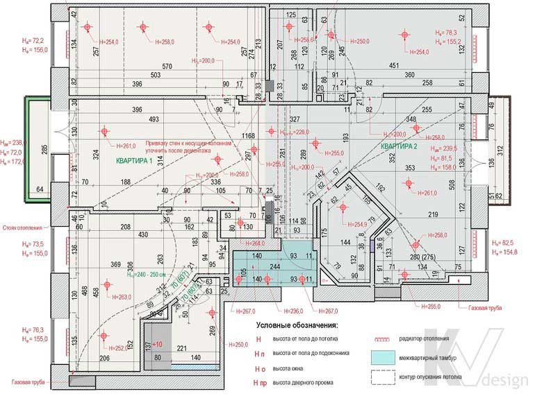

Размерный план после перепланировки

Дане креслення дає уявлення про те, як будуть виглядати квартира або будинок після перепланування: висота, довжина і ширина всіх приміщень, дверні та віконні блоки, наявність опусканий стель. Відповідно до розмірним планом підбирається підходяща за габаритами меблі і розраховується точна кількість оздоблювальних матеріалів, а в майбутньому креслення знадобиться господарям, якщо вони захочуть зробити косметичний ремонт або оновити меблювання.